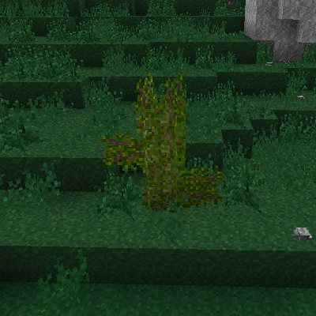

야생 과일
다양한 종류의 많은 야생 과일들이 세계에서 자라고 있습니다. 이 과일들은 올바른 장비를 이용해 수집하여 먹거나 농사할 수 있습니다. 과일들은 다양한 종류의 덤불 또는 나무에서 찾을 수 있습니다. 일반적으로, 과일은 과일 나무, 큰 덤불, 그리고 작은 덤불과 같은 종류의 식물에서 찾을 수 있습니다.
과일 식물들은 공통적인 생활 주기가 있습니다. 이들은 매년 자라고, 꽃을 피우고, 과일을 열고, 다시 집니다.
과일 식물들에는 철이 있습니다. 추운 계절에, 이 식물들은 갈색으로 변하고 죽습니다. 봄에는 초록색으로 변하고 생기를 찾으며, 과일을 열 준비를 하고 점차 자랍니다. 이런 일이 일어나는 정확한 때는 모든 과일이 다 다릅니다. 과일 식물들은 또한 오래되거나 알맞지 않은 기후에 있다면 죽을 수도 있습니다.
과일 나무
과일 나무는 작은 묘목에서 큰 꽃나무로 자랍니다. 과일 나무의 가지는 매우 중요하며 알맞은 기후에 있다면 계속 자라게 됩니다. 과일 나무들이 성숙하면, 가지 주변으로 잎이 납니다. 잎에서는 계절에 따라 꽃이 피거나 열매가 맺힙니다.

과일 나무의 예시.
과일 나무는 묘목에서부터 자랍니다. 해당 계절이 나무의 휴면기가 아니라면, 묘목은 나무의 자리를 잡고 자라기 시작합니다. 다 자란 나무의 크기는 원래 묘목 블록에 얼마나 많은 묘목이 있었는지에 따라 대략적으로 결정됩니다. 묘목이 많을수록 더 큰 나무가 자랍니다.
묘목들은 하나의 블록에 접목을 통해 추가될 수 있습니다. 접목하려면 묘목을 들고 왼손에는 칼을 든 상태에서 오른쪽 버튼을 누르면 됩니다.
묘목은 또한 과일 나무의 첫 번째 '팔꿈치' 부분, 즉 가지가 한 쪽과 위로 붙어 있는 곳에 놓일 수 있습니다. 이는 하나의 과일 나무가 여러 과일을 열 수 있게 합니다. 이 '팔꿈치'들을 도끼로 부수면 묘목이 또한 떨어집니다. 과일 나무 잎을 수확하기 위해서는 과일이 열린 잎에 오른쪽 버튼을 누르면 됩니다. 이는 하나의 과일을 떨어뜨리고, 휴면기에 들어갈 때까지 식물을 자라고 있는 상태로 되돌립니다.
체리 나무
기온: 5 - 25 °C
강수량: 100 - 350mm
멀티블록
체리 나무의 계절별 변화
청사과 나무
기온: 1 - 25 °C
강수량: 110 - 280mm
멀티블록
청사과 나무의 계절별 변화
레몬 나무
기온: 10 - 30 °C
강수량: 180 - 470mm
멀티블록
레몬 나무의 계절별 변화
올리브 나무
기온: 5 - 30 °C
강수량: 150 - 500mm
올리브는 가공해서 램프 연료로 쓸 수 있습니다.
멀티블록
올리브 나무의 계절별 변화
오렌지 나무
기온: 15 - 36 °C
강수량: 250 - 500mm
멀티블록
오렌지 나무의 계절별 변화
복숭아 나무
멀티블록
복숭아 나무의 계절별 변화
자두 나무
기온: 15 - 31 °C
강수량: 250 - 400mm
멀티블록
자두 나무의 계절별 변화
적사과 나무
기온: 1 - 25 °C
강수량: 100 - 280mm
멀티블록
적사과 나무의 계절별 변화
바나나 나무
기온: 17 - 35 °C
강수량: 280 - 500mm
바나나는 특별한 종류의 과일 나무입니다. 바나나는 수직으로만 자라고, 잎이 적으며 맨 위의 블록에서만 열매가 열립니다. 묘목은 식물의 꽃 부분에서 떨어집니다. 바나나가 한 번 수확되면, 식물은 죽고 새로운 과일을 만들어내지 않습니다. 대신 다음 해 봄에 다시 심어져야 합니다.
멀티블록
바나나 나무의 예시
큰 덤불
큰 덤불은 모든 방향으로 자라고 퍼지는 과일 식물입니다. 이들은 3블록까지 바로 위로 자라거나, 새로운 덤불로 자라는 가지를 뻗을 수 있습니다. 시간이 지난 후, 덤불은 퍼지기를 멈추고 성숙합니다. 이 덤불들을 날카로운 도구로 수확하면 새로운 덤불을 얻을 수도 있습니다. 완전히 성숙한 덤불은 항상 자기 자신을 떨어뜨립니다.
야생 덤불.
큰 덤불은 가지가 뿌리내릴 곳이 있을 때 퍼질 수 있습니다. 이는 하나의 덤불이 새로운 덤불을 만들기 위해서는 아래에 고체 블록이 필요하다는 것을 의미합니다. 다른 구조물이나 풀들이 없는 평평하고 트인 공간이 덤불이 퍼질 확률을 가장 높입니다.
덤불들은 과일 나무와 다르게 수화를 결정하기 위해 주변의 블록들을 확인합니다. 이 블록들은 오로지 강수량의 영향만 받습니다
모든 다 자란 덤불은 열매를 맺을 수 있으며, 오른쪽 버튼을 눌러 수확할 수 있습니다.
블랙베리 덤불
기온: 7 - 24 °C
수화: 24 - 100 %
블랙베리 덤불은 나무가 적은 곳에서만 생성됩니다.
멀티블록
퍼져가는 블랙베리 덤불의 계절별 변화
산딸기 덤불
기온: 5 - 25 °C
수화: 24 - 100 %
산딸기 덤불은 나무가 적은 곳에서만 생성됩니다.
멀티블록
퍼져가는 산딸기 덤불의 계절별 변화
블루베리 덤불
기온: 7 - 29 °C
수화: 12 - 100 %
블루베리 덤불은 나무가 적은 곳에서만 생성됩니다.
멀티블록
퍼져가는 블루베리 덤불의 계절별 변화
딱총나무 덤불
기온: 10 - 33 °C
수화: 12 - 100 %
산딸기 덤불은 나무가 적은 곳에서만 생성됩니다.
멀티블록
퍼져가는 딱총나무 덤불의 계절별 변화
작은 덤불
작은 덤불은 숲에서 생성되는 작은 과일 식물입니다. 때때로 작은 덤불은 주변 블록으로 자신을 복제하며 퍼집니다. 오른쪽 버튼을 눌러 수확할 수 있습니다.
멀티블록
산딸나무 덤불
기온: 15 - 35 °C
수화: 24 - 100 %
멀티블록
구스베리 덤불
기온: 5 - 27 °C
수화: 24 - 100 %
멀티블록
인동딸기 덤불
기온: -7 - 18 °C
수화: 24 - 100 %
멀티블록
진들딸기 덤불
기온: -2 - 17 °C
수화: 9 - 100 %
멀티블록
딸기 덤불
기온: 5 - 28 °C
수화: 12 - 100 %
멀티블록
가울테리아 덤불
기온: -6 - 17 °C
수화: 12 - 100 %
멀티블록
크랜베리
기온: -5 - 17 °C
크랜베리 덤불은 물 속에서만 자랍니다.